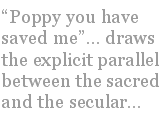

Australians, possibly because of their colonial past, have always been great travellers, leaving their island home in the hope of excitement, adventure and cultural experiences on the other side of the world. While some of this expatriate experience has been colourfully recorded through the satire and caricatured figures of the Akubra hat-wearing Bazza McKenzie and gladioli-lover Dame Edna Everage, there is also a tradition of representing the expatriate experience as a mystical, almost religious experience. Surely Peter Allen’s I still call Australia home belongs to this more romanticised, nostalgic view of the traveller who loves being free, but is also comforted by the thought that “It’s good to know where your journey ends.” And the lyrics provide the answer: “home”.
In reference to post-colonial Canada, theorist Northrop Frye suggested that the basic question of “home”, that is, seeking an identity for both individuals and the nation, is not “Who am I?” but “Where is here?” Australia, as a post-colonial nation, is in a similar position in terms of finding an appropriate identity that is linked not to the mother country, but to a sense of our own place.
Australian author David Malouf has attempted to address some of these questions in his novella An Imaginary Life (originally published in 1978 but referenced here in a 1999 edition). Through the exiled character of Roman poet Ovid, and the imagined historical reconstruction of his wilderness life in Tomis, Malouf explores Ovid’s quest for meaning and understanding once he is displaced from Rome with its high culture and sophisticated language.
Ovid is not like those many thousands of travellers who have willingly embraced life beyond their homeland. His journey has been forced upon him, not as a reward but as a punishment, and he feels the loss of his home, his culture and society in every part of his body and soul. Lost and isolated, Ovid finds himself without hope or inspiration, unable to find anything of value in his new home:
“It is the desolateness of this place that day after day fills my mind with its perspectives. A line of cliffs, oblique against the sky, and the sea leaden beyond. To the north, beyond the marshy river mouth, empty grasslands, rolling level to the pole.” (Malouf, 1999, p.7)
This is a landscape that for Ovid is “at the ends of the earth” (p.7), a landscape devoid of colour, fertility and creativity, “empty as far as the eye can see or the mind imagine, cloudless, without wings” (p.8). These accumulated images of emptiness, darkness and cold are used to mirror Ovid’s own “state of mind”: he’s in “no place” (p.8). The poet, the social creature, the lover of Latin is gone: “I am dead. I am relegated to the region of silence.” (p.20)
In order to transcend the silence of his new world and to learn another language that will provide him with the tools to communicate, Ovid must end one life and sense of self, in order to begin another. This is in effect what Northrope Frye argues about identity in a post-colonial world: that we are asking the wrong questions. Ovid needs to reject his past and long-held view of himself as a man of culture and learning (that is, his “Who am I?”) and instead embrace another question altogether: “Where is here?” This transformation of spirit is also linked to Karen Armstrong’s view that there is a strong correlation between the mystic and the poet in their quest for religious meanings. In the introduction to her anthology, Tongues of Fire: Anthology of Religious and Poetic Experience, Armstrong argues that journeys of inspiration and transcendence are not only associated with traditional religious experiences.
For Ovid, his transformation begins with his recognition of the beauty and power of nature. It is what Karen Armstrong would call his “Eureka!” moment (Armstrong 1985, p.30) and coincides with the discovery of a scarlet wild poppy. This discovery occurs when Ovid least expects it, when he is out walking “stumbling about talking to myself” (p.24) but as Armstrong points out, when the mind is “relaxed and receptive” new insights follow. (1985 p.30) For Ovid this insight comes in the form of a bright colour which is the first he has seen since being in exile. Of course this is used by Malouf as both a literal and metaphoric symbol. “Poppy you have saved me” (p.26) draws the explicit parallel between the sacred and the secular; “saved” clearly suggests association with the religious experience, (Armstrong, 1985, p.28) but here it is closer to a religious insight into nature and the cycles of life.
It is the beginning of Ovid’s transformation and rebirth:
“Poppy, ..you have recovered the earth for me. I know how to work the spring. It is about to begin. All my life till now has been wasted.” (p.26)
This moment of clarity heralds his transformation from civilised Roman poet with a proud tradition of Latin texts, to Ovid, the simple man who seeks beauty and transformation through closeness to the natural world. In essence, he is beginning to come “home”. Ovid also uses his imagination to gain further inspiration about his place within his world and to overcome his fears. Transformed, he recognises, that
“We have only to conceive of the possibility and somehow the spirit works in us to make it actual. Our further selves are contained within us, as the leaves and blossoms are in the tree. We have only to find the spring and release it.” (p.58)
And he releases it through the development of a new language, not formal Latin, but one of nature and permanence, and its associated value system. “Everything I ever valued before this was valuable only because it was useless.” (p.62) This acknowledgement brings with it an awareness that he has finally found his “true destination” and even if recalled to Rome now, he would not return. Spending time with the wild child, who belongs neither to Rome nor to the village, Ovid seeks initially to teach him the language of the Gettae, the local tribe; but as he begins his final metamorphosis, the roles reverse, and the wild child, like the wild scarlet poppy, teaches him to love nature, and to “make the sounds of the birds and the beasts”. (p.93)
This is a language that comes from the heart, from the edge of sleep, and which is a return to his past, its absence long forgotten, but now returning. A tongue from childhood and innocence, and more significantly a language of reconciliation not division. (p.94)
In the end, Ovid’s quest for inspiration and transcendence leaves him feeling bodiless, unbelievably happy and at one with nature. He understands, the “endless process of creation and survival and death.” He seeks solace in the dream, “reconciled to the process” of birth and death and will “settle deep into the earth, deeper than I do in sleep, and will not be lost.” (p.147) He is “home”.
An Imaginary Life is a post-colonial novella that is beautifully and poetically written, and its undertones of the Australian landscape and colonial experience are seamlessly interwoven within the story of an exiled poet who only comes truly alive once he glories not in his personal achievement, but in his new world with all its beauty and rhythms. In the end, as Ovid faces his death, he is “immeasurably, unbearably happy”.
He is “there”.